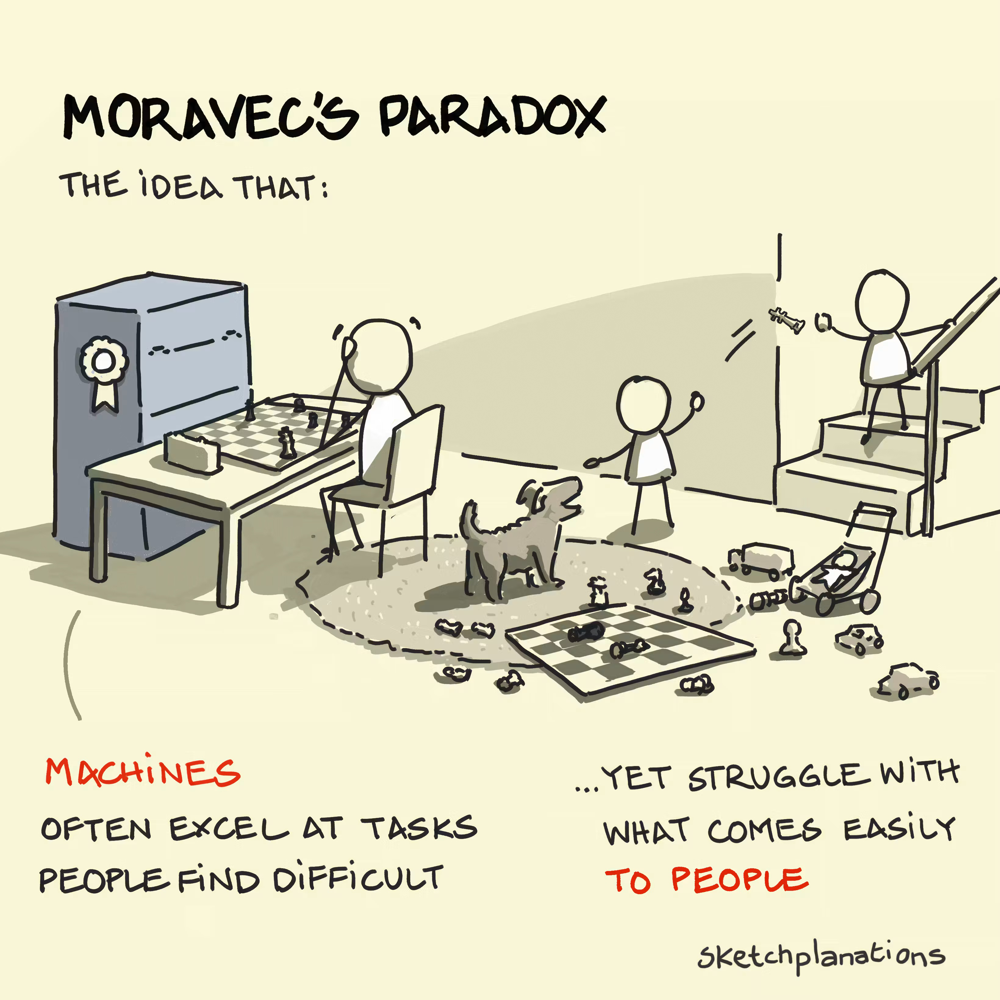
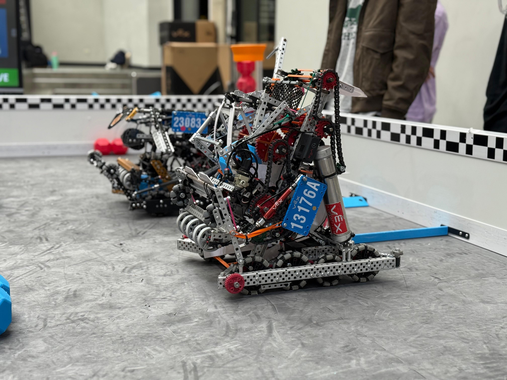

Programmed robots vs. intelligent robots
In 1961, General Motors installed Unimate, the first industrial robot.
It was an arm that picked up pieces of very hot metal and welded them onto car bodies. This was a dangerous task for workers, who could suffer serious harm from toxic fumes or even lose limbs if they weren’t paying attention. This robot repeated the same movement endlessly, with a precision no worker could match.
Classic industrial robots repeat precise movements in fenced-off, enclosed spaces and don’t adapt to anything. Artificial intelligence, on the other hand, is needed when the environment is unpredictable. It comes into play at three levels:
- Perception: understanding what’s around.
- Planning: deciding the path or sequence of actions.
- Learning: learning by trial and error (reinforcement learning) or by imitating (imitation learning).
To understand this better, let’s take an example: the task of picking up a glass from a table full of objects.
- Perception: the robot has to recognize which of the many objects is the glass, where it is, and how it’s oriented.
- Planning: the robot has to decide how to move its arm to reach the glass without knocking over the objects next to it.
- Learning: the robot has two options.
- Reinforcement learning: the robot tries thousands of times and gets a “reward” when it succeeds, so that it learns to recognize a correct action (a bit like training a dog).
- Imitation learning: a person moves the arm by hand and the robot learns by copying the movements.
It seems absurd to have to teach a machine something so simple. All this just to pick up a glass, something a two-year-old does without thinking. But this is exactly where robotics discovers one of its most surprising truths: what is easy for us is extremely hard for a computer, and vice versa.
This is exactly what Moravec’s paradox says: what is hard for us is easy for a computer (for example, playing chess or doing complex calculations), and what is trivial for us is hard for a computer (for example, walking or picking up a glass).

As proof of this, in 1997 IBM’s supercomputer Deep Blue beat world chess champion Garry Kasparov. Yet almost thirty years later, robots still struggle to fold a T-shirt or open an ordinary door. Walking, seeing and grabbing objects are abilities our bodies have perfected over millions of years. For us they are automatic, so we don’t realize how complex they are. Chess and mathematics are relatively more recent inventions. Their algorithmic, rigid approach makes them hard for the human mind, but for a computer they are just rules and calculations that it carries out with absolute ease.
But how much is really “intelligent” in today’s robots? A good example comes from international robotics competitions, such as the VEX competition, where students from all over the world program robots that have to act on their own in a competition environment.
In Lugano, there is a group that puts these challenges into practice. Smilebots is a university team that designs, builds and programs robots for VEX U, the university division of one of the largest robotics competitions in the world. Every year the organizers present a completely new game, with new objects to collect, new goals and new rules. Teams therefore have only a few months to come up with robots that can take it on. Each match starts with the autonomous period: 30 seconds in which no one can touch the controls, and the robots must act based only on their program and on what their sensors measure. Only after that does the driver-controlled phase begin, in which students drive the robots with a controller. The autonomous period is exactly where you can see how hard it is to perceive, decide and act without a human.

To know where it is, the robot relies on its sensors. Autonomous routes are planned in advance, but planning isn’t enough: in the real world a wheel slips, or one motor is slightly weaker than the other. That’s why teams use PID, a control method that continuously corrects the movement. It works like riding a bike: if you notice you’re drifting, you steer a little to get back on track. PID corrects errors after they have already happened. There is also software that anticipates the movement by predicting the next moves and where the robot should be at every moment. It compares the prediction with the real sensor data, corrects the estimate and produces new predictions, so that the robot arrives precisely at the required point. It’s a continuous cycle of prediction, measurement and correction.
AI also comes in through a less visible but increasingly important route: development itself. Today, students can use artificial intelligence models to write code, find bugs, understand complex algorithms and optimize their robots’ parameters. As a result, tools that until a few years ago required an engineer’s experience are now accessible even to a team of students.
There is a limit, though: an AI model can suggest code, but it can’t know how the robot will behave on that field, with that battery, on that mat. The final word always belongs to testing in the real world.
Looking at a competition robot, you might think it’s a machine full of intelligence. In reality, much of its behavior is still programmed by hand. Even an action that seems simple, like driving perfectly straight for one meter, requires sensors, continuous corrections and hours of testing. It’s Moravec’s paradox seen up close. So artificial intelligence doesn’t replace traditional programming but complements it, stepping in where conditions are unpredictable. And that is exactly what “intelligent” robots are about: they are machines that can adapt to what wasn’t foreseen.